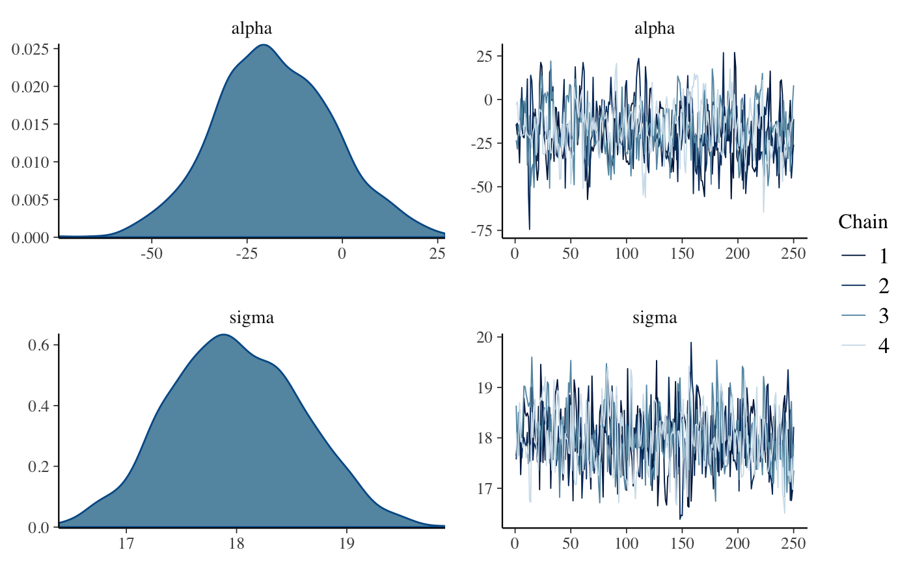
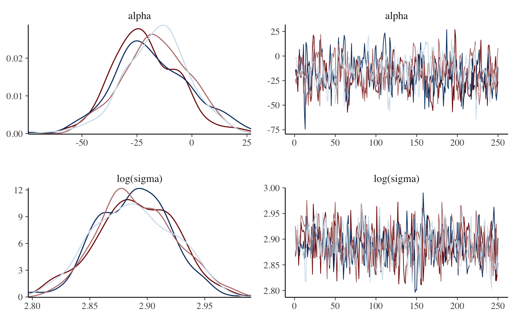
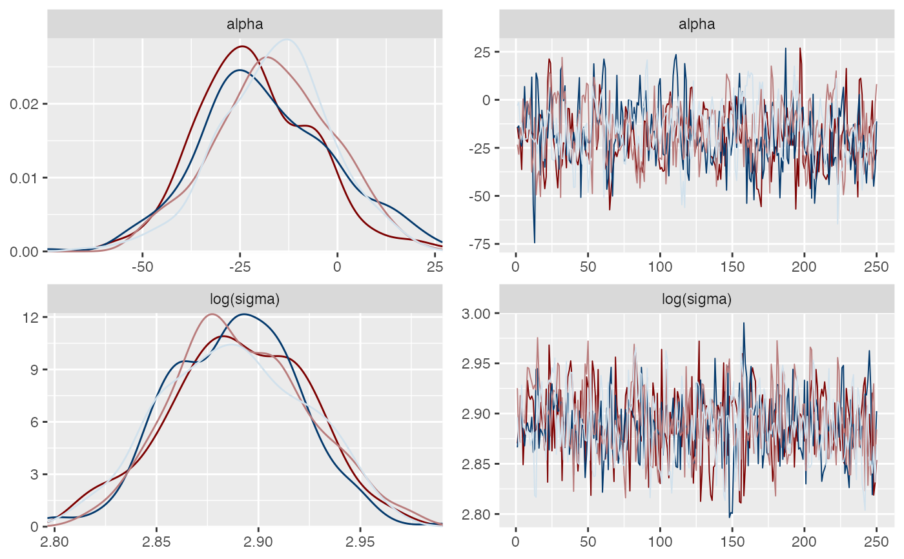

Combination plots
MCMC-combos.RdCombination plots
mcmc_combo(x, combo = c("dens", "trace"), ..., widths = NULL, gg_theme = NULL)
Arguments
| x | A 3-D array, matrix, list of matrices, or data frame of MCMC draws.
The MCMC-overview page provides details on how to specify each these
allowed inputs. It is also possible to use an object with an
|
|---|---|
| combo | A character vector with at least two elements. Each element of
|
| ... | Arguments passed to the plotting functions named in |
| widths | A numeric vector the same length as |
| gg_theme | Unlike most of the other bayesplot functions,
|
Value
A gtable object (the result of calling
gridExtra::arrangeGrob()) with length(combo) columns and
a row for each parameter.
See also
Other MCMC: MCMC-diagnostics,
MCMC-distributions,
MCMC-intervals, MCMC-nuts,
MCMC-overview, MCMC-parcoord,
MCMC-recover,
MCMC-scatterplots,
MCMC-traces
Examples
#> [1] 250 4 4dimnames(x)#> $Iteration #> NULL #> #> $Chain #> [1] "chain:1" "chain:2" "chain:3" "chain:4" #> #> $Parameter #> [1] "alpha" "sigma" "beta[1]" "beta[2]" #># change second plot, show log(sigma) instead of sigma, # and remove the legends color_scheme_set("mix-blue-red") mcmc_combo( x, combo = c("dens_overlay", "trace"), pars = c("alpha", "sigma"), transformations = list(sigma = "log"), gg_theme = legend_none() )# same thing but this time also change the entire ggplot theme mcmc_combo( x, combo = c("dens_overlay", "trace"), pars = c("alpha", "sigma"), transformations = list(sigma = "log"), gg_theme = ggplot2::theme_gray() + legend_none() )